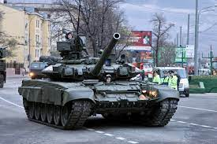

Al menos nueve civiles mueren por el impacto de proyectiles en Lviv, Dnipró y Jersón. El 40% de la población de Kiev se encuentra sin por cortes de emergencia
Rusia ha vuelto a lanzar un ataque masivo contra una decena de regiones de Ucrania, entre ellas, Lviv (oeste), Odesa y Jersón (sur), Járkov (norte), Dnipró (este) y Kiev (centro). Ha sido una noche larga y complicada, envuelta en la incertidumbre que genera el escuchar durante horas las alarmas a lo largo del país. Hay, al menos, nueve muertos en Lviv, Dnipró y Jersón, según las autoridades.
En esta nueva ofensiva han sido empleados 81 misiles, seis de ellos son hipersónicos de modelo Kinzhal, y ocho drones kamikazes, informan fuentes militares. Rusia ha recuperado “sus tácticas miserables”, ha lamentado el presidente de Ucrania, Volodímir Zelenski, tras reconocer que se han visto afectadas infraestructuras críticas y zonas residenciales y que los servicios de emergencia tratar de restablecer el sistema energético. “Los ocupantes solo pueden aterrorizar a los civiles. Eso es todo lo que pueden hacer”, ha advertido el mandatario.
